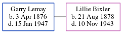

Garry Albert Lemay 1876 - 1947
[ Home ] | [ Calendar ] | [ Surnames Index ] | [ Census Index ] | [ Family History ]Garry Lemay, the husband of Lillie May Bixler (the third cousin three-times-removed on the mother's side of Nigel Horne), was born in Fort Wayne, Allen, Indiana, USA on Apr 3, 18761,2. He married Lillie (a seamstress) in Fort Wayne on Jan 31, 19181.
He died on Jan 15, 1947 in Fort Wayne.
Citations
- United States Marriages - Findmypast
- World War I Draft Registration Cards - Findmypast
Media
United States, World War One (WWI) Draft Registration Cards,1917-1918 Image - USM-WW1DR-005247188-01546
World War I Draft Registration Cards - USM-WWIDR-1669069913
Family Tree
Generated by ged2site. Last updated on Jun 11, 2024